The Cineschedule page is a beast not only to get running, but to create. Much toil and trouble was required to create the Tasks page, especially regarding the JavaScript/JQuery involved.
A dropdown menu was created with Bootstrap and customized with CSS to permit lightmode changes, which will not be detailed in this report, though it uses similar methods to the task table in terms of storing information.
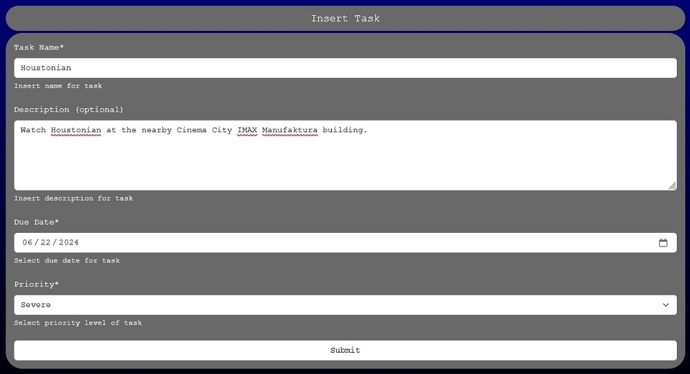Once the form entries are filled, particularly the “Task name”, “Due Date”, and “Priority” fields, and the Submit button is clicked, all fields are extracted with JavaScript/JQuery, including the description (even if it is empty).
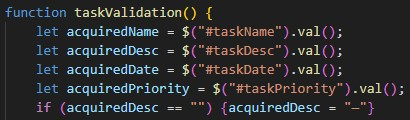A confirmation alert will appear with the extracted information.
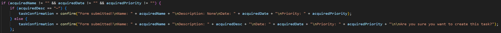Confirming creates a new row with 5 cells, with the first 4 using the extracted information, and the 5th being created with a checkbox and a delete button. Otherwise, row creation is cancelled.
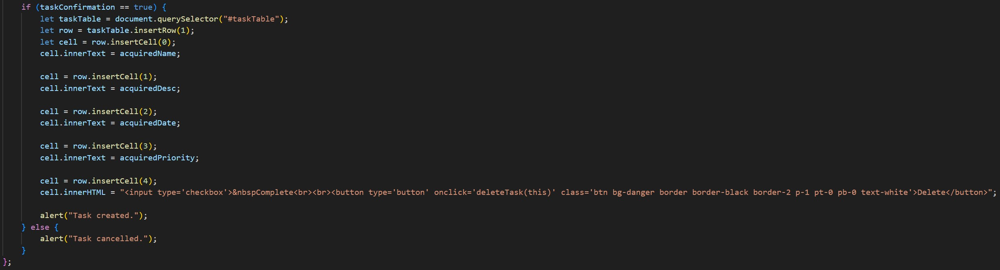The table appears as follows:
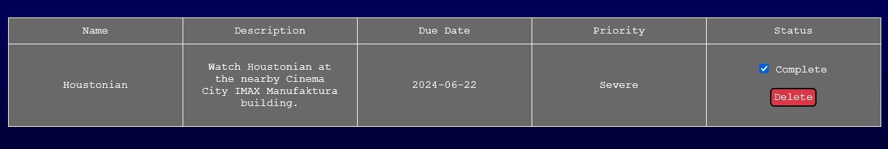The delete button calls a function that locates the row the button is located in. The argument within the function is the button itself. Its parent node is found (its cell), followed by that one's parent node (the row of the cell), followed by this row's position on the table.
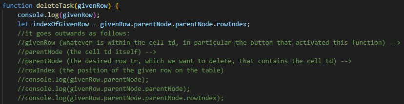The user is asked to confirm deletion; if confirmed, the specific row is deleted based on its index.
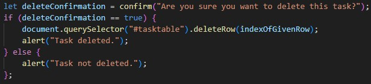Now the saving method.
When the page loads, it checks for any stored table and loads it if it exists.
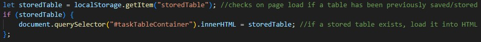The “Save Changes” and “Reset Table” buttons call parts of the localStorage structure that has been created, which functions flawlessly on Chromium browsers such as Chrome and Edge, but not Firefox (Firefox does not register localStorage changes across webpages). This can be fixed by running on a local server. The reset button will be discussed later.
Immediately when the save button is clicked, the user is asked to confirm table saving. If saving is confirmed, two actions occur.
The first action does the following: an array is created with every “Complete” checkbox in the table, whether checked or not. Then, with a for loop, every element in this array is inspected. If a given checkbox has been checked by the user, an attribute is added to it so it remains checked if the page is reloaded. Otherwise, if a checkbox is not checked, or it is no longer checked, the attribute that checks for if a checkbox is checked is removed.
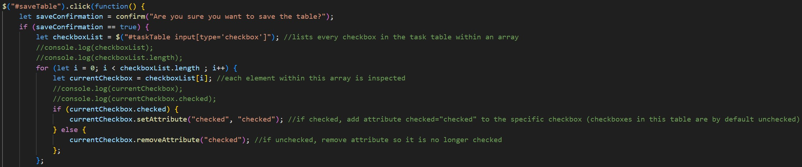The second action does the following: the entire table is extracted and stored in localStorage. Done. The table is saved. Unless you cancel, in which case nothing is saved.
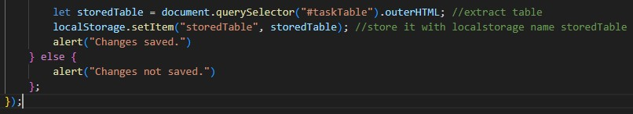The reset button has its own function. It asks for confirmation and warns of its irreversibility. If confirmed, the table is eradicated from localStorage, otherwise nothing happens.
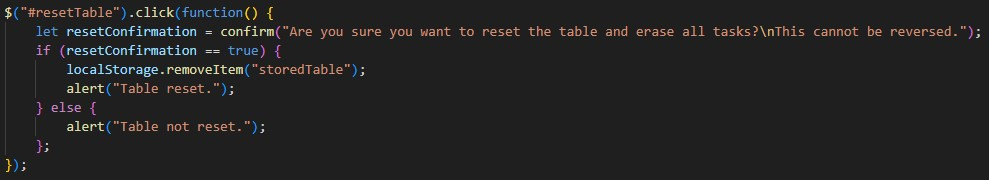That is the end of the overall localStorage structure. Yet, there is more. A statistics section.
Within a function called loadStats(), the total rows of the table are counted, with a -1 there to exclude the header row. Then, of all the checkboxes, only the checked ones are counted and included in an array. The length of this array is then determined to find the total checked rows. To find the unchecked rows, the checked rows are subtracted from the total rows. All values are recorded in HTML.
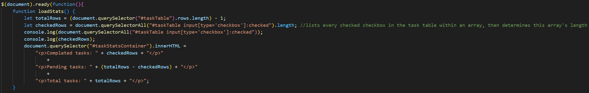This function is called both when the page loads and when the “Update Statistics” button is clicked.
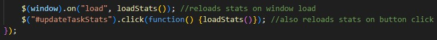This is how the Tasks page works.
The tasks table also appears in the Home page simply by copying the HTML structures of the save button and table containers from the task page. The same JavaScript file still runs on all pages, and since they have the same IDs, the table should appear as it does in the tasks page.
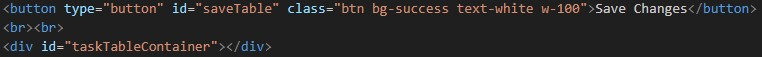As for the personal page that was not directly specified (the Movies page), no JavaScript was used. Just a bunch of tables and images.
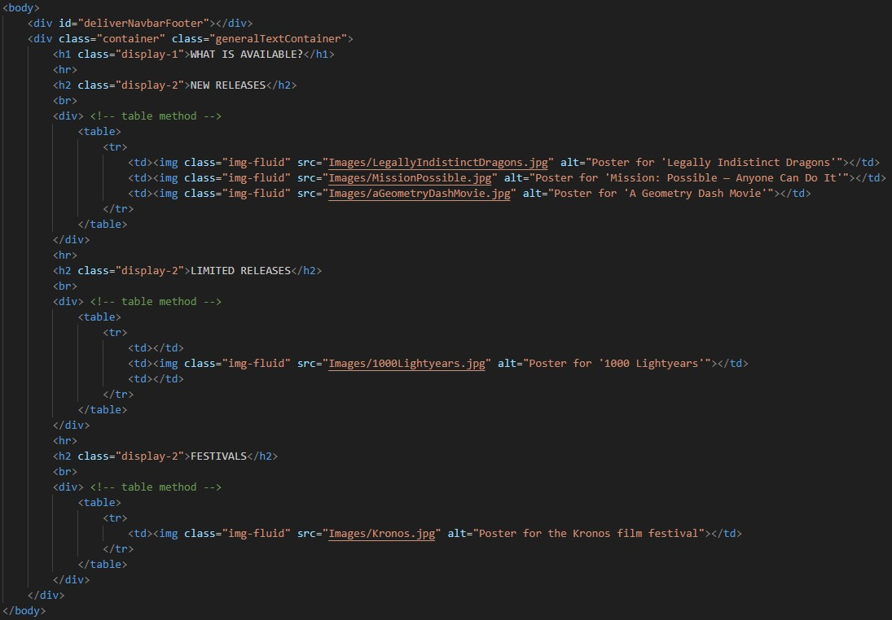All done. Nothing technical left to say.
I greatly enjoyed decorating the website. Using CSS and especially Bootstrap was a great deal of fun. I am a wizard, and HTML, CSS, and JavaScript are my robe. They are the basics. The necessities. However, Bootstrap was my staff. I did a great deal of magic with it, and I am proud of what I did. Meanwhile. JQuery was also used, and it was my hat, for it is the brains of the operation. Except my brain is extremely stupid because working with JavaScript and JQuery was easily the most horrid part of this experience. So many questions left unanswered, and so much energy wasted on trying to answer those questions. How do I save things? Cookies? What is localStorage? Why do these methods not work consistently on all browsers? All very fine questions that I had to waste so much energy on not even fully answering. And do you want to know the most perplexing part of it all? The necessity of it all! I could have been taught even the very basics of these saving methods, which is the only way this entire operation would even succeed, since the entire operation hinged on that task table. Instead, all of my energy was spent on learning the basics of these methods. The basics! And even then, so much went unanswered! I was burnt out by the time I began implementing things, so I simply gave up on some things like filtering and sorting. Never implemented them.
And to top it all off? I am late to submitting. Let us see how it goes.
Thank you for reading.
This is the repository for the website:
https://github.com/NikolaosKC/Cineschedule
Paramount Pictures. (2024). Logo of the 2025 film Mission Impossible: The Final Reckoning [Online Image]. In Wikimedia Commons. https://commons.wikimedia.org/wiki/File:Mission_Impossible_The_Final_Reckoning_Logo.png. Public Domain.
RobTop Games. (2013). Geometry Dash Logo [Online Image]. https://www.robtopgames.com/
{kind=link}